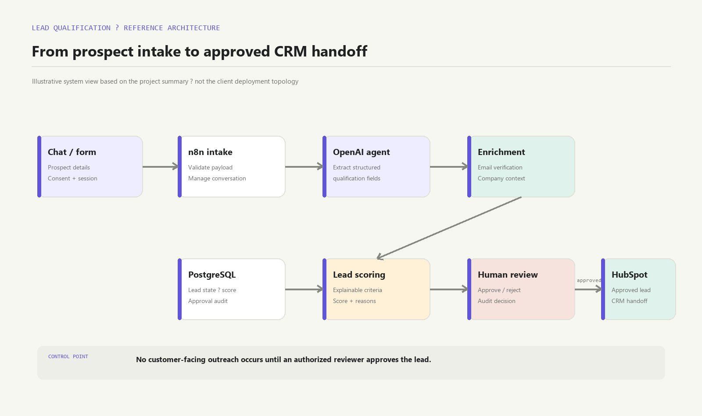
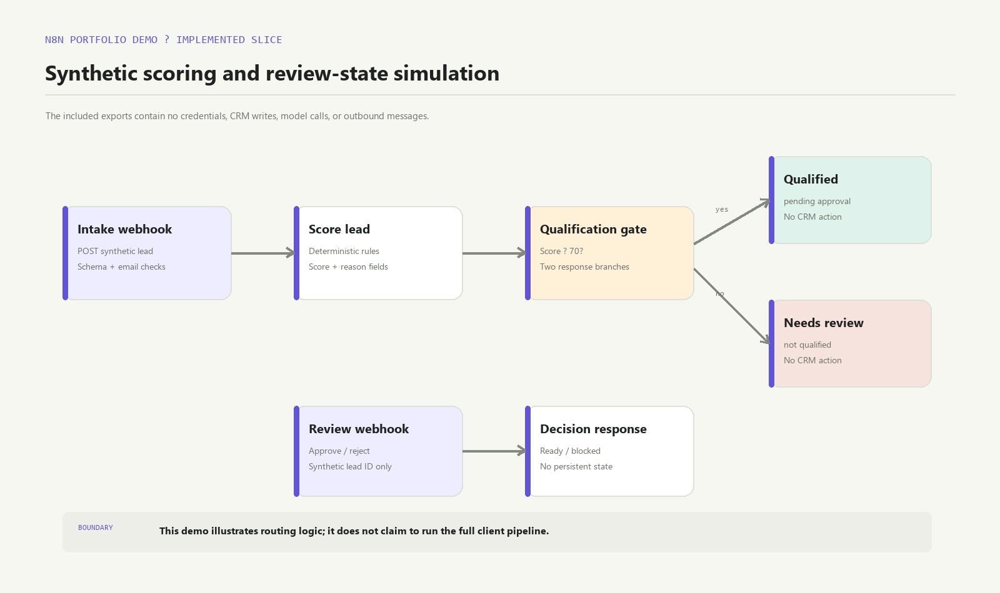
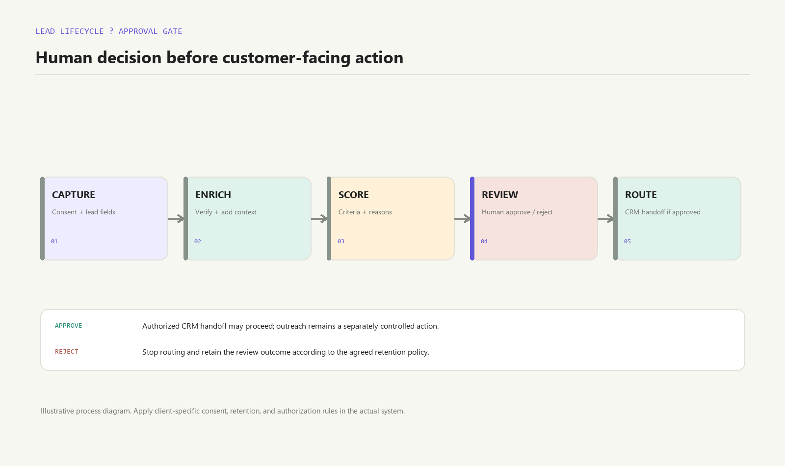

Understand the need
Gather the prospect’s business problem, timing, budget range, and decision role through a conversational intake.
AUTOMATION · AI · CRM
A freelance lead qualification system designed to collect prospect needs, enrich and score leads, and route qualified opportunities for human review before customer-facing follow-up.
Portfolio-safe presentation. Client implementation ran in the client’s environment and is not included here. The interactive demo and workflow exports use synthetic data and do not contact a CRM or send outreach.
COLLECT → SCORE → REVIEW
01 / THE WORK
The client workflow used an AI agent to gather and structure prospect information, support qualification, and route leads into the sales process. The client’s workflow, records, prompts, and credentials stay in the client environment.
Gather the prospect’s business problem, timing, budget range, and decision role through a conversational intake.
Validate and enrich the lead, then use explicit qualification criteria to support a consistent sales handoff.
Route qualified leads for human approval before any customer-facing follow-up.
MY CONTRIBUTION
I delivered the freelance implementation in the client’s environment. This portfolio page describes the work at a high level; the demo below is a separate, synthetic recreation of the workflow pattern.
02 / INTERACTIVE DEMO
This local demonstration scores fictional lead details and pauses at a simulated human approval decision. No data leaves this page.
READY
Score, reasons, and approval state will appear here.
03 / ARCHITECTURE
This reference diagram summarizes the project pattern described above. The demo workflow export implements only synthetic scoring and review-state simulation.



Download n8n intake and scoring workflowDownload n8n review workflow